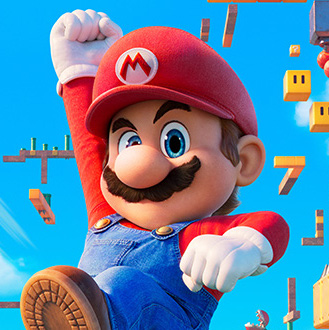

-
Super Mario
Descrição
Super Mário é o icônico encanador italiano da Nintendo, conhecido por sua aparência distintiva, macacão azul, camiseta vermelha e bigode espesso. Ele é um herói otimista e determinado, sempre pronto para enfrentar desafios e resgatar a Princesa Peach das garras do vilão Bowser. Com suas habilidades acrobáticas e carisma cativante, Mário conquistou o coração de gerações de jogadores ao redor do mundo.
-
Luigi
Descrição
Luigi, o irmão mais novo de Super Mário, é reconhecido por seu macacão verde e personalidade tímida. Apesar de sua natureza reservada, ele é um herói corajoso, sempre pronto para ajudar Mário em suas aventuras. Sua alta estatura e habilidades únicas o tornam um personagem valioso no universo de Super Mário. Com sua lealdade e determinação, Luigi conquistou o coração dos fãs ao redor do mundo.
-
Bowser
Descrição
Bowser, também conhecido como Rei dos Koopas, é o principal antagonista da série Super Mário. Ele é um vilão colossal e poderoso, reconhecido por sua aparência de lagarto e casco espinhoso. Bowser é implacável em seus esforços para capturar a Princesa Peach e dominar o Reino dos Cogumelos, enfrentando Mário em batalhas épicas que desafiam sua coragem e determinação. Sua presença ameaçadora e astúcia o tornam um dos vilões mais emblemáticos dos videogames.
-
Toad
Descrição
Toad é um personagem simpático e leal da série Super Mário, reconhecido por sua cabeça em formato de cogumelo e seu traje colorido. Ele serve como um dos habitantes do Reino dos Cogumelos e é conhecido por sua natureza prestativa, frequentemente auxiliando Mário em suas aventuras. Apesar de sua estatura pequena, Toad é corajoso e está sempre pronto para ajudar seus amigos a enfrentar desafios. Sua presença alegre e otimista adiciona um toque de charme ao universo de Super Mário.
-
Princesa Peach
Descrição
Princesa Peach, a governante do Reino dos Cogumelos, é uma figura icônica da série Super Mário. Reconhecida por sua gentileza e elegância, Peach é frequentemente capturada pelo vilão Bowser, desencadeando as aventuras de Mário. Apesar de sua situação de refém, ela é uma personagem forte e determinada, muitas vezes contribuindo para sua própria libertação e demonstrando sua inteligência e coragem. Sua presença é central na narrativa, adicionando uma dimensão de heroísmo e resiliência ao universo de Super Mário.
-
Donkey Kong
Descrição
Donkey Kong é um gorila gigante e poderoso, conhecido por sua força impressionante e temperamento impulsivo. Ele é um dos antagonistas originais de Super Mário, frequentemente causando problemas para Mário e seus amigos. Apesar de sua aparência intimidante, Donkey Kong tem um lado carismático e cativante, o que o torna um personagem memorável no universo dos videogames. Suas aventuras desafiadoras e encontros com Mário adicionam uma camada emocionante à história dos jogos.